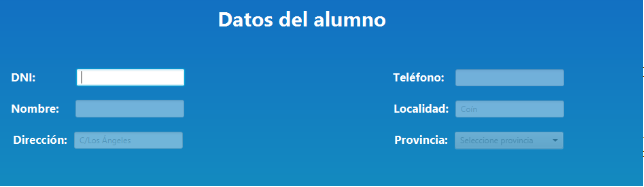
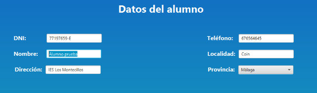
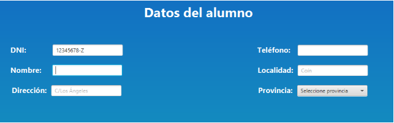

Matrícula
La vista de matrícula te permite matricular a alumnos en cursos ya existentes en la base de datos, seleccionando a su vez las características de la matrícula para informar cual deberá ser el importe abonado.

En cuanto al apartado de los datos del alumno, lo primero que se deberá hacer será introducir los 8 dígitos del DNI del alumno. En función de si el DNI existe o no ocurrirán dos cosas:
- Si el DNI ya existe en la base de datos se cargarán los datos del alumno con dicho DNI en los campos. Estos datos podrán ser modificados en caso de que sea necesario y se guardarán una vez se guarde la matrícula que se está registrando.

- Si el DNI no existe en la base de datos, se habilitarán el resto de campos y todos deberán ser rellenados para guardar al alumno una vez se guarde la matrícula que se está introduciendo.

En cuanto al apartado de los datos de la matrícula, se debe elegir el curso en el que se va a matricular al alumno que se ha indicado previamente. En caso de que el alumno ya tenga una matrícula en dicho curso, se cargaran los datos de la matrícula ya existente y estos podrán ser modificados. En caso de que la matrícula aún no exista se deberán marcar los datos correspondientes a la matrícula.
En el campo del importe abonado se carga el importe que se deberá abonar de la matrícula en función del resto de casillas seleccionadas. Las modificaciones en el importe funcionan de la siguiente manera:
- Tipo de matrícula: Solo se puede elegir un tipo de matrícula. Ordinaria es el tipo por defecto de la matrícula y no afecta en el importe abonado. Repetidor aumenta un 10% el precio de la matrícula. Familia numerosa disminuye un 10% el precio de la matrícula.
- Documentación necesaria: Se informa si la documentación es necesaria o no, y en caso de serlo aumenta el precio de la matrícula un 5%.
- Certificado necesario: Se informa si es necesario el certificado pero no tiene mayor transcendencia en el precio de la matrícula.
El campo de la fecha de matrícula permite seleccionar el momento en el que se realizó la matrícula, siendo posible seleccionar fechas desde el día actual y días anteriores a este.
Posteriormente se encuentran los botones:
- El botón aceptar informará al usuario si está seguro que desea realizar la operación. En caso de aceptar introducirá los datos en la base de datos. En caso de cancelar volverá a la vista de modificación de los datos.
- El botón cancelar devuelve a la aplicación al menú principal.
- El botón limpiar borra todos los campos introducidos hasta el momento y comienza un nuevo proceso de introducción de datos.
Por último se encuentra el tiempo de sesión. Al entrar al apartado de matrícula comienza un contador que se puede visualizar en la parte inferior de la pantalla, en este caso de 90 segundos. Una vez finalice ese tiempo de sesión, el usuario será notificado de que se ha acabado el tiempo de sesión y devolverá a la aplicación al menú principal.